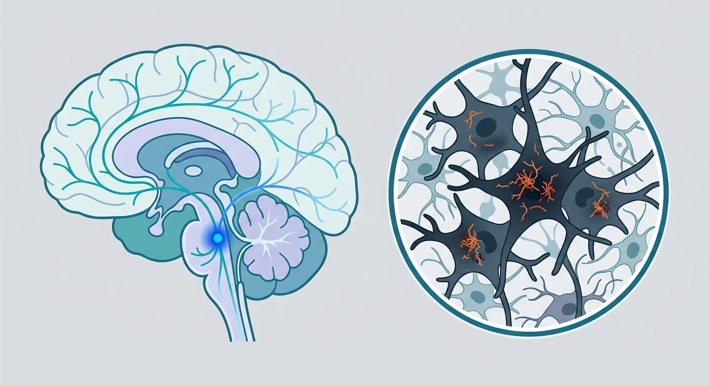

Ground Zero for Alzheimer’s: How a Tiny Brainstem Nucleus and a Dark Pigment Map the Path to Cognitive Longevity

Deep within the human brainstem lies a structure no larger than a toothpick, yet it holds sway over our sleep, attention, and cognitive vitality. This is the locus coeruleus—Latin for "the blue spot"—named for the dark, ebony pigment of its neurons. For decades, neuroscientists have known that this tiny noradrenergic powerhouse is the literal ground zero for Alzheimer's disease, harboring toxic tau proteins years, sometimes decades, before the first signs of memory loss surface. Yet, because of its minuscule size and deep location, the molecular machinery driving this early vulnerability has remained shrouded in shadow. Now, a pioneering study published in Acta Neuropathologica has illuminated this dark corner of the brain, offering a high-definition molecular map that could reshape how we target cognitive decline.
To peer into the locus coeruleus, the research team deployed cutting-edge spatial transcriptomics on brain tissue from 33 middle-aged human donors. This technology acts like a molecular camera, allowing scientists to see not just which genes are turned on, but precisely where they are active in the tissue landscape. By stratifying these donors by their genetic risk—specifically looking at carriers of the Alzheimer’s-promoting APOE4 gene versus those with the protective APOE2 gene—the researchers discovered a striking double-whammy of vulnerability. In APOE4 carriers, the local astrocytes—the essential caretaker cells of the brain—showed severely muted gene expression. Deprived of their astrocytic support system, the noradrenergic neurons of the locus coeruleus are left structurally and metabolically isolated, defenseless against the encroaching tides of aging.
The plot thickens with neuromelanin, the dark pigment that gives the locus coeruleus its name. Neuromelanin is not merely a cellular byproduct; it is a metabolic shield. The researchers discovered that individual neurons expressing higher levels of the APOE gene had significantly less neuromelanin. Because neuromelanin-associated genes are heavily enriched for pathways regulating autophagy—the cell's internal garbage disposal system—losing this pigment effectively cripples the neuron's ability to clear out toxic aggregates like phosphorylated tau. This provides a direct, mechanistic link explaining why the locus coeruleus is uniquely susceptible to early degeneration: high APOE expression suppresses neuromelanin, which stalls autophagy, leaving the cell's waste-disposal pathways jammed and allowing tau to accumulate unchecked.
For longevity investors and drug developers, these insights represent a paradigm shift. Historically, the fight against Alzheimer’s has focused on clearing amyloid plaques in the late stages of disease—a strategy that has yielded modest, hard-won clinical victories. This research points toward an entirely different frontier: preserving the locus coeruleus during midlife. If therapeutics can be designed to bolster astrocytic support in APOE4 carriers or rescue neuromelanin-driven autophagy, we might prevent the noradrenergic collapse that triggers sleep disturbances and cognitive decline in the first place, stopping Alzheimer's before it ever gains a foothold in the neocortex.
However, translating these elegant post-mortem snapshots into living human therapies presents steep hurdles. While the study's use of human donor tissue avoids the classic trap of relying solely on mouse models—which often fail to mimic human Alzheimer's pathology—it remains an observational, static study. We cannot definitively prove cause and effect in human subjects from post-mortem tissue alone. Furthermore, with a sample size of 33 donors, the ancestry-specific differences observed (such as variations between donors of European and African descent) require validation in much larger, diverse cohorts. Finally, targeting the locus coeruleus therapeutically is a delicate tightrope walk; because norepinephrine regulates fundamental cardiovascular and arousal systems, any off-target intervention could result in severe systemic side effects. The path to a clinical drug remains long, but the molecular compass is now pointing in the right direction.
Sources & Citations:
Primary Source: Molecular programs in human locus coeruleus link APOE and neuromelanin to Alzheimer's vulnerability. (Acta neuropathologica)
- Maroof, A., et al. (2026). Molecular programs in human locus coeruleus link APOE and neuromelanin to Alzheimer's vulnerability. Acta Neuropathologica. https://doi.org/10.1007/s00401-026-03073-8